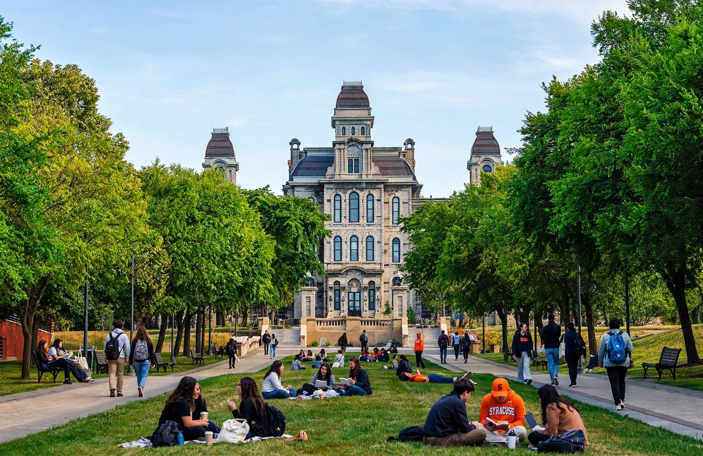

| Syracuse University | |
|---|---|
| Motto | Suos Cultores Scientia Coronat ("Knowledge crowns those who seek her") |
| Established | 1870 |
| Type | Private research university |
| Location | Syracuse, New York, United States |
| Students | About 22,000 |
| Colors | Orange |
| Sporting affiliation | NCAA Division I – ACC |

Syracuse University (SU) is a private research university in Syracuse, New York, United States. It was established in 1870 with roots in the Genesee Wesleyan Seminary and was chartered by the Methodist Episcopal Church, though it has been nonsectarian since its founding. The university's main campus, centred on the historic Hall of Languages (1873), sits on a hill east of downtown Syracuse.
Syracuse comprises thirteen schools and colleges, including the Maxwell School of Citizenship and Public Affairs, long ranked among the top public-affairs schools in the United States; the S. I. Newhouse School of Public Communications, one of the country's leading journalism and media schools; the College of Law; the Whitman School of Management; and the School of Architecture. The university is classified as an R1 research institution.
The Syracuse Orange compete in the Atlantic Coast Conference. The men's basketball team, which plays in the JMA Wireless Dome — the largest domed stadium on a college campus — won the NCAA championship in 2003 under coach Jim Boeheim. Notable alumni include President Joe Biden, a graduate of the College of Law.